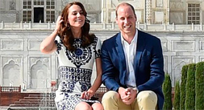

news

Also in the News
NZ stages first Pastafarian wedding

Mountain lion removed after being found at Los Angeles school
William and Kate pose on Taj
Prince William and Catherine posed at the mausoleum in Agra on the final day of their tour of India and Bhutan. William's mother was captured sitting alone in front of the monument to love in 1992, shortly before the break up of her marriage to the Prince of Wales.
Royal officials said the duke and duchess hoped to forge new memories. It was a day when a new royal narrative was written at India's Taj Mahal.
The Diana photographs captured isolation; a princess soon to loosen her ties to the monarchy. Today, her son, a prince, brought his wife to the Indian monument to love - something his father promised and failed to do with his first wife.
Royal officials said the duke and duchess hoped to forge new memories. It was a day when a new royal narrative was written at India's Taj Mahal.

famous spot
Paula Malcolmson’s Trixie, a prostitute in the Western series Deadville, became the moral centre of the programme as it evolved (Credit: HBO)
Breaking Bad's Wendy, by contrast, is initially not much more than a sight gag, though one whose character grows over her three appearances in the series. At first, she's the spaced-out, meth-addicted sex partner of Jesse Pinkman (Aaron Paul), and is used as a this-could-be-your-life example by DEA Agent Hank Schrader (Dean Norris) when he cluelessly attempts to caution his nephew about the dangers of drug use. But she takes on new shades in her third and final appearance, during a sex montage scored to The Association's upbeat pop hit Windy. With every customer she encounters she becomes that much more of a tragic figure.